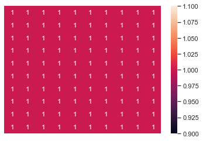
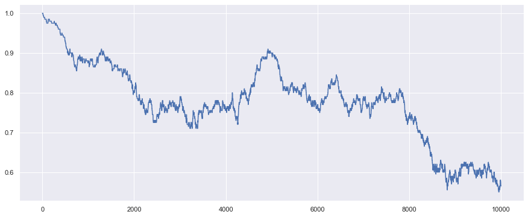

Ising Model - 2D : Monte Carlo Simulation
First of all we import the required libraries:
import matplotlib.pyplot as plt
import math as math
import random as random
import pylab as pylab
import numpy as np
import seaborn as sns
sns.set()
Global parameters
Then we set some global variables:
Kb = 1.0
JJ = 1.0
Cold Start and Hot Start
Before begining simulation, if we select all spin up or all spin down then it is called cold configuration.
def cold_start(L):
U = [[1.0 for k in range(L)]for l in range(L)]
return U
We can make a plot of this cold configuration by the help of Uplotter :
CU = cold_start(10)
sns.heatmap(CU,annot =True)
plt.axis(False)
(0.0, 10.0, 10.0, 0.0)

if we select spin randomly up or down then it is called cold configuration
def hot_start(L):
U = [[0.0 for i in range(L)]for j in range(L)]
for i in range(L):
for j in range(L):
t = random.sample([-1,1],1)
U[i][j] = t[0]
return U
Similarly we can plot thishot configuration as well.
HU = hot_start(10)
sns.heatmap(HU,annot =True)
plt.axis(False)
(0.0, 10.0, 10.0, 0.0)

Hamiltonian
Hamiltonian of L by L lattice is given by
\( H = - J \sum_{i\neq j} S_{i}S_{j} \)
def Hamiltonian(U):
H = 0.0
L = len(U)
for i in range(L):
for j in range(L):
ni = 0;nj =0;
if i == 0: ni = L
if j == 0: nj = L
H = H - 0.5*JJ*U[i][j]*(U[i][(j-1)+nj] \
+ U[(i+1)%L][j] \
+ U[i][(j+1)%L] \
+ U[(i-1)+ni][j])
return H
One can check what are hamiltonian for hot and cold start:
Hamiltonian(CU)
-200.0
Hamiltonian(HU)
12.0
Mangnetization
One can calculate magnetization by simply taking average over all spins:
def magnetization(U):
return np.array(U).sum()/float(len(U*len(U)))
magnetization(HU)
0.04
magnetization(CU)
1.0
Spin Flipper
def ld(k,L):
if k == 0:
return L
else: return 0
def spin_flipper(U,printkey):
L = len(U)
i = random.randint(0, L-1)
j = random.randint(0, L-1)
if printkey ==1:print("flipped at", i,j)
U[i][j] = -U[i][j]
dH = -2.0*JJ*U[i][j]*(U[i][(j-1)+ld(j,L)] \
+ U[(i+1)%L][j] \
+ U[i][(j+1)%L] \
+ U[(i-1)+ld(i,L)][j])
return U,dH,i,j
Thermalization
def Thermalization(U,T,nrun,printkey) :
M = [0.0 for k in range(nrun)]
irun = 0
while irun < nrun:
V = U
w = magnetization(U)
U,dH,p,q = spin_flipper(U,printkey)
if dH < 0:
if printkey ==1: print(irun, "E decreased! You are accepted !",dH)
M[irun] = magnetization(U)
else:
if printkey ==1:print(irun, "E increased!",dH)
frac = math.exp(-dH/(Kb*T))
b = random.uniform(0.0,1.0)
if printkey ==1:print("frac =",frac,"b=",b,"dH = ",dH)
if b < frac:
if printkey ==1:print(irun, " You Lucky!")
M[irun] = magnetization(U)
else:
if printkey ==1: print(irun, "Loser!")
if printkey ==1: print("spin restablished at",p,q)
U[p][q] = -U[p][q]
M[irun] = w
for i in range(L):
for j in range(L):
if U[i][j] != V[i][i]:
if printkey ==1: print("Warning!spin is changed!", i,j)
if printkey ==2 : print(irun, M[irun])
irun = irun +1
return M,U
Lets print out some measurements of m
nrun = 20
T = 1.0
L = 10
U = cold_start(L)
M,U = Thermalization(U,T,nrun, 1)
flipped at 6 1
0 E increased! 8.0
frac = 0.00033546262790251185 b= 0.5671077259055917 dH = 8.0
0 Loser!
spin restablished at 6 1
flipped at 5 2
1 E increased! 8.0
frac = 0.00033546262790251185 b= 0.3231620080611951 dH = 8.0
1 Loser!
spin restablished at 5 2
flipped at 7 1
2 E increased! 8.0
frac = 0.00033546262790251185 b= 0.11202501799113995 dH = 8.0
2 Loser!
spin restablished at 7 1
flipped at 5 1
3 E increased! 8.0
frac = 0.00033546262790251185 b= 0.9403656345766181 dH = 8.0
3 Loser!
spin restablished at 5 1
flipped at 0 0
4 E increased! 8.0
frac = 0.00033546262790251185 b= 0.14218890326015643 dH = 8.0
4 Loser!
spin restablished at 0 0
flipped at 5 0
5 E increased! 8.0
frac = 0.00033546262790251185 b= 0.0963025212725882 dH = 8.0
5 Loser!
spin restablished at 5 0
flipped at 0 8
6 E increased! 8.0
frac = 0.00033546262790251185 b= 0.565791348883872 dH = 8.0
6 Loser!
spin restablished at 0 8
flipped at 3 7
7 E increased! 8.0
frac = 0.00033546262790251185 b= 0.3387910454379671 dH = 8.0
7 Loser!
spin restablished at 3 7
flipped at 9 1
8 E increased! 8.0
frac = 0.00033546262790251185 b= 0.1936472524177364 dH = 8.0
8 Loser!
spin restablished at 9 1
flipped at 7 0
9 E increased! 8.0
frac = 0.00033546262790251185 b= 0.24948905296269597 dH = 8.0
9 Loser!
spin restablished at 7 0
flipped at 6 7
10 E increased! 8.0
frac = 0.00033546262790251185 b= 0.518899292783646 dH = 8.0
10 Loser!
spin restablished at 6 7
flipped at 8 1
11 E increased! 8.0
frac = 0.00033546262790251185 b= 0.13159925938392314 dH = 8.0
11 Loser!
spin restablished at 8 1
flipped at 5 4
12 E increased! 8.0
frac = 0.00033546262790251185 b= 0.11321720447730321 dH = 8.0
12 Loser!
spin restablished at 5 4
flipped at 2 5
13 E increased! 8.0
frac = 0.00033546262790251185 b= 0.9225608625932972 dH = 8.0
13 Loser!
spin restablished at 2 5
flipped at 4 5
14 E increased! 8.0
frac = 0.00033546262790251185 b= 0.31039416582757795 dH = 8.0
14 Loser!
spin restablished at 4 5
flipped at 9 2
15 E increased! 8.0
frac = 0.00033546262790251185 b= 0.8360880711041137 dH = 8.0
15 Loser!
spin restablished at 9 2
flipped at 9 8
16 E increased! 8.0
frac = 0.00033546262790251185 b= 0.26428473982836087 dH = 8.0
16 Loser!
spin restablished at 9 8
flipped at 7 2
17 E increased! 8.0
frac = 0.00033546262790251185 b= 0.3292714399864062 dH = 8.0
17 Loser!
spin restablished at 7 2
flipped at 1 4
18 E increased! 8.0
frac = 0.00033546262790251185 b= 0.1478523271555081 dH = 8.0
18 Loser!
spin restablished at 1 4
flipped at 1 3
19 E increased! 8.0
frac = 0.00033546262790251185 b= 0.2466252577141801 dH = 8.0
19 Loser!
spin restablished at 1 3
L = 20
nrun = 10000
T = 2.4
U = cold_start(L)
M,U = Thermalization(U,T,nrun, 0)
X = np.arange(0,len(M),1)
plt.figure(figsize = [15,6])
plt.plot(X,M,"-")
plt.show()

We can plot both run with hot and cold start together:
L =20
nrun = 10000
T = 5.0
U1 = cold_start(L)
U2 = hot_start(L)
M1,U1 = Thermalization(U1,T,nrun,0)
M2,U2 = Thermalization(U2,T,nrun,0)
X = np.arange(0,len(M1),1)
plt.figure(figsize = [15,6])
plt.plot(X,M1,"-")
plt.plot(X,M2,"-")
plt.show()

Phase Transition
L = 32
nrun = 10000
Tn = 100
avm = []
KT = []
for t in range(1,Tn+1):
T = 0.1*t
KT.append(T)
U = cold_start(L)
M,U = Thermalization(U,T,nrun,0)
nM = M[1000:nrun-1]
avm.append(np.mean(nM))
plt.figure(figsize = [10,8])
plt.scatter(KT,avm)
plt.xlabel("Temperature")
plt.ylabel("Average magnetization")
plt.show()